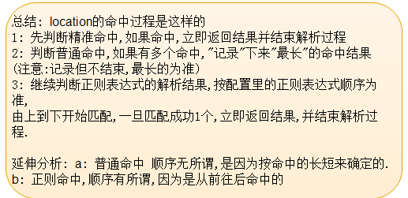

Nginx应用篇
应用篇主要学习以下几项：
- Nginx虚拟主机配置
- Nginx日志切割
- Nginx与gzip设置
- Nginx与浏览器缓存配置
- Nginx反向代理
- nginx 与memcached的组合
Nginx虚拟主机配置
配置项
nginx.conf
1 |
|
虚拟主机配置
基于域名的虚拟主机
1 |
|
基于端口的虚拟主机配置
1 |
|
日志管理
在nginx的server段,我们可以看到日志的存储路径
#access_log logs/host.access.log main;
这说明 该server, 它的访问日志的文件是 logs/host.access.log ,
使用的格式”main”格式.
除了main格式,你可以自定义其他格式.
main格式是什么?
在http段中，我们可以看到：
1 | log_format main '$remote_addr - $remote_user [$time_local] "$request" ' |
main格式是我们定义好一种日志的格式,并起个名字,便于引用.
默认的日志格式: main1
2
3
4
log_format main '$remote_addr - $remote_user [$time_local] "$request" '
'$status $body_bytes_sent "$http_referer" '
'"$http_user_agent" "$http_x_forwarded_for"';
如默认的main日志格式,记录这么几项
远程IP- 远程用户/用户时间 请求方法(如GET/POST) 请求体body长度 referer来源信息
http-user-agent用户代理/蜘蛛 ,被转发的请求的原始IP
http_x_forwarded_for:在经过代理时,代理把你的本来IP加在此头信息中,传输你的原始IP
自定义自己的日志格式
2: 声明一个独特的log_format并命名
log_format mylog '$remote_addr- "$request" '
'$status $body_bytes_sent "$http_referer" '
'"$http_user_agent" "$http_x_forwarded_for"';
在下面的server/location,我们就可以引用 mylog
在server段中,这样来声明
Nginx允许针对不同的server做不同的Log ,(有的web服务器不支持,如lighttp)
access_log logs/access_8080.log mylog;
声明log log位置 log格式;
日志切割
问题：假如每天的访问量很大，日志文件会越来越大，造成后期不好管理以及处理，我们就需要对日志进行切割
解决方案：
shell+定时任务+nginx信号管理，完成日志按日期存储
分析思路：
- 凌晨 00:00:01 把昨天的日志重名，放在相应的目录下
- 再用信号USR1控制Nginx重新生成新的日志文件
具体操作
bash脚本
log.sh1
2
3
4
5
6
7
base_path='/usr/local/nginx/logs'
log_path=$(date -d yesterday +"%Y%m")
day=$(date -d yesterday +"%d")
mkdir -p $base_path/$log_path
mv $base_path/access.log $base_path/$log_path/access_$day.log
kill -USR1 `cat /usr/local/nginx/logs/nginx.pid`
定时任务
Crontab 编辑定时任务
01 00 * /xxx/path/log.sh 每天0时1分(建议在02-04点之间,系统负载小)
Nginx与gzip设置
location 语法
location匹配可分为三种：
location = patt {} [精准匹配]
1
2
3
4location = / {
root /var/www/html/;
index index.htm index.html;
}location patt{} [一般匹配]
- location ~ patt{} [正则匹配]
1
2
3
4location ~ image {
root /var/www/; //注意此处不用再写img目录
index index.html;
}
匹配准则总结

rewrite重写
重写中用到的指令
- if (条件) {} 设定条件,再进行重写
1 | If 空格 (条件) { |
条件又怎么写?
答:3种写法
1: “=”来判断相等, 用于字符串比较
2: “~” 用正则来匹配(此处的正则区分大小写)
~* 不区分大小写的正则
3: -f -d -e来判断是否为文件,为目录,是否存在.
例子：
- 禁用IP
1 | if ($remote_addr = 192.168.1.100) { |
- ie浏览器重写
1 |
|
- 自定义404页面
1 | if (!-e $document_root$fastcgi_script_name) { |
- set #设置变量
例子如下：
1 |
|
- return #返回状态码
- break #跳出rewrite
- rewrite #重写
可参考如下例子对ecshop网址的重写：
1 |
|
gzip压缩提升网站速度
在浏览器访问网站，打开f12的时候，经常能看到：
请求:
Accept-Encoding:gzip,deflate,sdch
响应:
Content-Encoding:gzip
Content-Length:36093
再把页面另存下来,观察,约10W字节,实际传输的36093字节
原因——-就在于gzip压缩上.
原理:
浏览器—请求—-> 声明可以接受 gzip压缩 或 deflate压缩 或compress 或 sdch压缩
从http协议的角度看–请求头 声明 acceopt-encoding: gzip deflate sdch (是指压缩算法,其中sdch是google倡导的一种压缩方式,目前支持的服务器尚不多)
服务器–>回应—把内容用gzip方式压缩—->发给浏览器
浏览<—–解码gzip—–接收gzip压缩内容—-
gzip配置的常用参数
gzip可以写在http,server,location上下文
- gzip on|off; #是否开启gzip
- gzip_buffers 32 4K| 16 8K #缓冲(压缩在内存中缓冲几块? 每块多大?)
- gzip_comp_level [1-9] #推荐6 压缩级别(级别越高,压的越小,越浪费CPU计算资源)
- gzip_disable #正则匹配UA 什么样的Uri不进行gzip
- gzip_min_length 200 # 开始压缩的最小长度(再小就不要压缩了,意义不在)
- gzip_http_version 1.0|1.1 # 开始压缩的http协议版本(可以不设置,目前几乎全是1.1协议)
- gzip_proxied # 设置请求者代理服务器,该如何缓存内容
- gzip_types text/plain application/xml # 对哪些类型的文件用压缩 如txt,xml,html ,css
- gzip_vary on|off # 是否传输gzip压缩标志
注意:
图片/mp3这样的二进制文件,不必压缩
因为压缩率比较小, 比如100->80字节,而且压缩也是耗费CPU资源的.
比较小的文件不必压缩
Nginx与浏览器缓存配置
nginx的缓存设置有助于提高网站性能
对于网站的图片,尤其是新闻站, 图片一旦发布, 改动的可能是非常小的.我们希望 能否在用户访问一次后, 图片缓存在用户的浏览器端,且时间比较长的缓存.
可以, 用到 nginx的expires设置。
nginx中设置过期时间,非常简单,
在location或if段里,来写.
格式：
1 | expires 30s; |
(注意:服务器的日期要准确,如果服务器的日期落后于实际日期,可能导致缓存失效)
原理是: 服务器响应文件内容是,同时响应etag标签(内容的签名,内容一变,他也变), 和 last_modified_since 2个标签值
浏览器下次去请求时,头信息发送这两个标签, 服务器检测文件有没有发生变化,如无,直接头信息返回 etag,last_modified_since
浏览器知道内容无改变,于是直接调用本地缓存.
这个过程,也请求了服务器,但是传着的内容极少.
对于变化周期较短的,如静态html,js,css,比较适于用这个方式
Nginx反向代理和负载均衡
之所以两个合在一起的原因是负载均衡通过反向代理来实现的
反向代理
使用proxy_pass ,就这么简单1
2
3
4
5
location / {
proxy_pass http://www.baidu.com;
proxy_set_header X-Forwarded-For $proxy_add_x_forwarded_for;
}
负载均衡
网站的访问量越来越大，服务器的服务模式也得进行相应的升级，比如分离出数据库服务器、分离出图片作为单独服务，这些是简单的数据的负载均衡，将压力分散到不同的机器上。有时候来自web前端的压力，也能让人十分头痛。怎样将同一个域名的访问分散到两台或更多的机器上呢？这其实就是另一种负载均衡了，nginx自身就可以做到，只需要做个简单的配置就行。
nginx不单可以作为强大的web服务器，也可以作为一个反向代理服务器，而且nginx还可以按照调度规则实现动态、静态页面的分离，可以按照轮询、ip哈希、URL哈希、权重等多种方式对后端服务器做负载均衡，同时还支持后端服务器的健康检查。
Nginx负载均衡一些基础知识：
负载均衡也是很简单，就是upstream和upstream的配置，如下所示：
1 |
|
nginx 与memcached的组合
用法: nginx响应请求时,直接请求memcached,如果没有相应的内容,再回调PHP页面,去查询database,并写入memcached
用这个方法我们可以做页面的缓存
分析：
一般用 uri arg 做key, 如 /news.php?id=3
Nginx很容易支持配置memcache,如下所示：
Nginx第三方模块
1 | location / { |
但是我们要memcache集群，在nginx中做集群与负载均衡,步骤都是一样的，Upstream {}模块 把多台服务器加入到一个组，
nginx做集群，使用一致性哈希算法，需要安装第三方模块，具体步骤如下：
下载扩展
上官网下载ngx——http_consistent_hash
编译第三方模块
在nginx源码目录下，注意是nginx的源码
如：1
2./configure --prefix=/usr/local/nginx --add_module=/path/ngx_module/下载的第三方目录
Make && make instal
nginx上配置memcached集群
1 |
|
writemmen.php
这个文件的逻辑是访问的页面没有缓存的时候，需要查询数据库插入到memcache中
memcached同样也需要使用一致性哈希算法做集群。
php使用一致性哈希算法很简单，直接修改php.ini1
memcache.hash_strategy=consistent
然后就可以美滋滋的使用Nginx和memcache的勾结了。